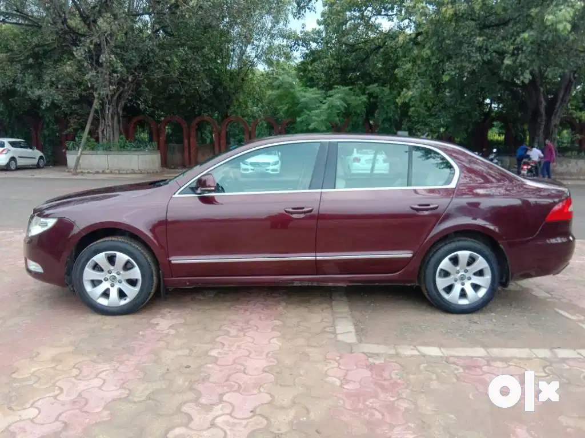

All original paint first owner full insured both keys genuine run top model airbags alloy wheels Stearing control climate control air conditioner key less entry leather seats sunroof as good as new car
ADDITIONAL VEHICLE INFORMATION:
ABS: Yes
Accidental: No
Adjustable External Mirror: Power
Adjustable Steering: Yes
Air Conditioning: Automatic Climate Control
Number of Airbags: 6 airbags
Alloy Wheels: Yes
Anti Theft Device: Yes
Aux Compatibility: Yes
Battery Condition: New
Bluetooth: Yes
Vehicle Certified: Yes
Color: Bordeaux/Maroon
Cruise Control: Yes
Insurance Type: Comprehensive
Lock System: Remote Controlled Central
Make Month: January
Navigation System: Yes
Parking Sensors: Yes
Service History: Available
Sunroof: Yes
Tyre Condition: New
USB Compatibility: Yes
For more details you can contact the seller at skodaseller@gmail.com
